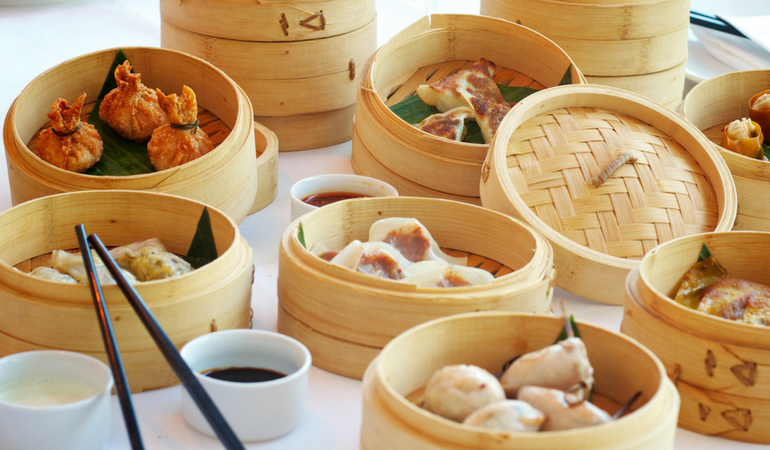

Chinese Dim Sum

Description
There are multiple ways to view the origins of Dim Sum.
Cantonese Dim Sum was originally based on local foods.
After the creation of Dim Sum, many people from different
parts of China influenced and added more ingredients to make
the flavor and texture unique to their style. Guangdong alone
has over one thousand Dim Sum dishes compared to other areas
in China.
Let's cook!
Equipment
- Bamboo Steamer Basket
- Food Processor
Ingredients
- 300 grams ground pork collar steak cut is always a good one
- 300 grams ground prawns Tiger prawns
- 5 tbsp soy sauce My recommendation Kikkoman Soy Sauce
- 2 tsp oyster sauce
- 2 tsp sesame oil
- 2 tsp sugar Brown sugar gives an intensive Flavor
- 1 tsp salt sea salt or table salt
- 20 pieces wonton skins Choose a package that has a darker
color
- 2 chili pepers
- 1 minced onion
Steps
-
Take a food processor and grind the prawns add the ground pork
and the rest of the ingredients, to mix everything well
-
Take the wonton skins and place between your thumb and the
forefinger, add the filing in the middle and carefully push up
the rest of the skin and push with a teaspoon the filling. Flat
the base so the dim sum can sit straight on the steamer.
-
Take a pan filled it with water and place your bamboo steamer
on the top and basket with a leaf of Chinese cabbage o baking
paper with holes so you can put on top your dim sums.
-
Put the dim sum in the bamboo steamer basket, cover and steam
for about 12 min
- Served with soy sauce.